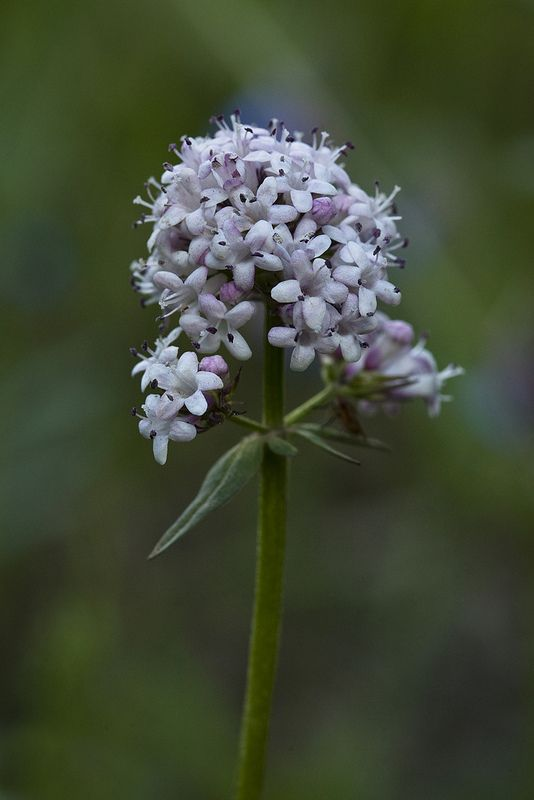
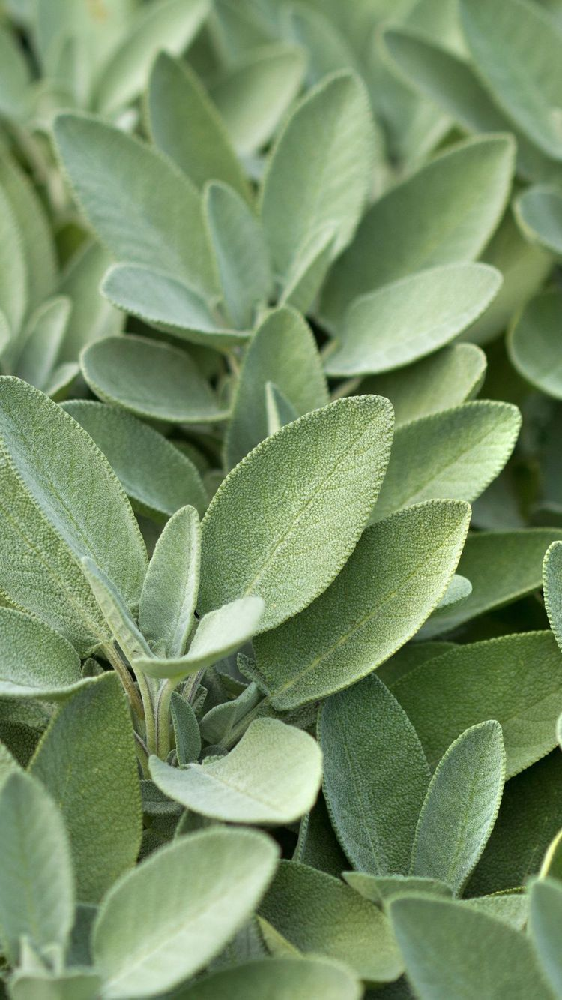
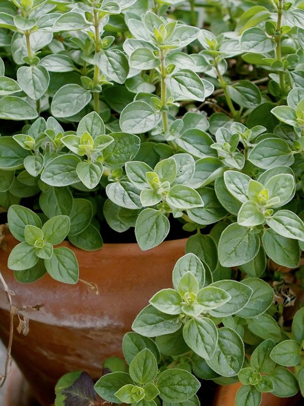
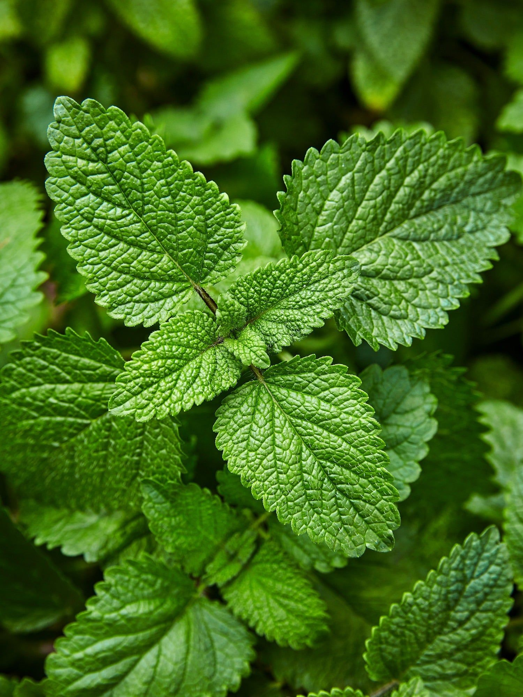
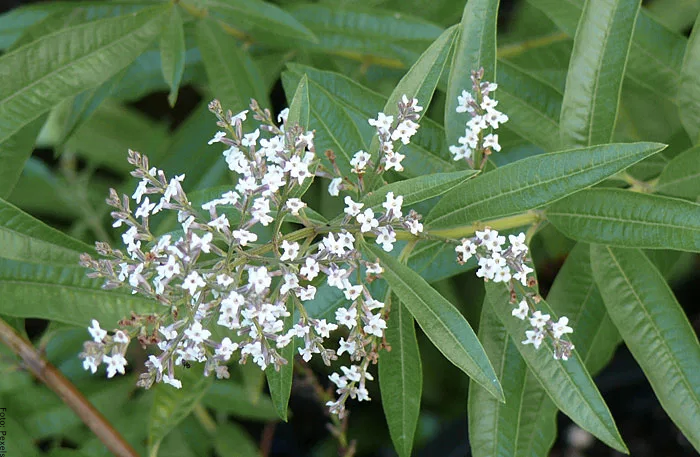
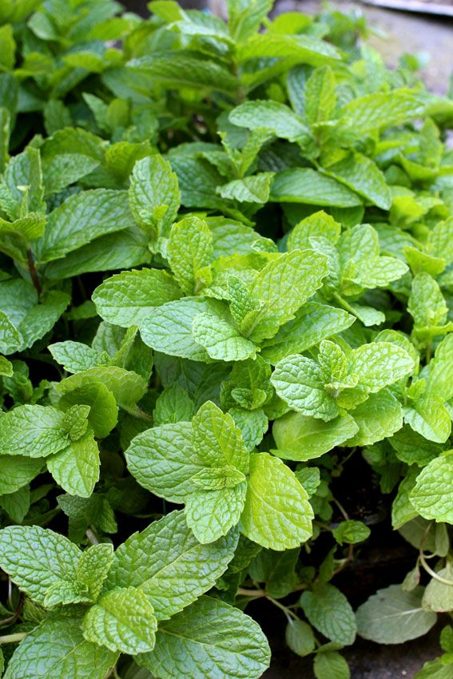

Sirve para el malestar estomacal y también para calmar el estrés sin caerte de sueño. Útil en casos de nerviosismo y ansiedad, potencia sus efectos al combinarla con lavanda.
- Contraindicaciones para tener en cuenta:
su consumo excesivo podría traerte somnolencia.

Es un sedante que relaja el sistema nervioso. Se recomienda mucho para personas que sufren de insomnio y ansiedad generalizada, alivia la fatiga y logra la armonía entre el cuerpo y la mente.
- Contraindicaciones para tener en cuenta:
- Evita consumirla en la mañana porque puede causar somnolencia.
- No deben consumirla las personas que están tomando medicamentos.
- No se aconseja durante épocas de embarazo, o en lactancia. Consultar con un médico.
- No es compatible con el alcohol, ya que es depresor del sistema nervioso central, por ello, al mezclarse pueden provocar un exceso de sedación provocando fuerte somnolencia.
La lavanda es una de las mejores plantas para controlar el estrés, ayuda a conciliar el sueño, aliviar los dolores de cabeza y hasta controlar la irritabilidad. Se recomienda tomarlo en la noche, para alcanzar un estado pleno de relajación.
Es un antiinflamatorio, reduce la ansiedad y tiene un efecto calmante, es buena para el intestino.
- Contraindicaciones para tener en cuenta: si eres alérgico al polen, debes consultar al médico.

La salvia es una planta aromática, sirve para preparar una excelente infusión. Mejora la calidad de la digestión, la tos. Se recomienda endulzarlo con miel.
- Contraindicaciones para tener en cuenta:
- Consumirla con moderación, sin abusar, ya que contiene tujona.
- No se aconseja durante épocas de embarazo.
Es un excelente relajante natural, y alivia el estrés. El olor del té de jazmín tiene efectos sedantes, regulando el estado de ánimo, reduce los dolores de cabeza y es digestivo.
El aroma de jazmín puede bajar la frecuencia cardíaca y generar un efecto calmante. Ademá reduce el riesgo de problemas como la gripe y el resfriado, debido a los antioxidantes que contiene.
- Contraindicaciones para tener en cuenta: podría causar irritación estomacal.
Ayuda a descansar, conciliar el sueño y relajarse. Es recomendado sobre todo para aquellas personas que estudian, ya que ayuda a calmar los nervios.
- Contraindicaciones para tener en cuenta:
- No se recomienda beber más de 3 tazas al día.
- Podría causar náuseas.
- Pacientes con enfermedades cardíacas no deben consumirlo.
- Las personas que toman medicamentos que contienen litio o diuréticos no deben consumirlo.
La pasiflora se distingue por ser una de las flores con más propiedades relajantes, por lo que se recomienda tomar una infusión diariamente para disminuir la ansiedad y controlar las crisis nerviosas. También para combatir el insomnio, ayudan a aliviar la fatiga muscular, la migraña y los estados leves de ansiedad, ya que regulariza el ritmo cardiaco y la presión arterial; además ayuda a aliviar los problemas digestivos.
- Contraindicaciones para tener en cuenta:
- No es recomendada durante el embarazo, ni el periodo de lactancia por no tener suficiente evidencia que avale su eficacia y seguridad en estas situaciones. Consultar con un médico u obstetra.
- Está contraindicada en personas con alergia.
- No debe ser consumida con bebidas alcohólicas por potenciar sus efectos, ni con otros medicamentos como los antidepresivos inhibidores de la monoaminooxidasa (IMAO), calmantes con efectos sedativos y antihistamínicos.

Una bebida llena de antioxidantes naturales y poder relajante. Puedes tomarlo en cenas o meriendas para tenerlo más fácil a la hora de conciliar el sueño.
- Contraindicaciones para tener en cuenta: en exceso podría causar náuseas y vómitos; malestar en el estómago; diarrea; dolor de cabeza; vértigo; fatiga; dolor muscular; dificultad para tragar; salivación excesiva.
Té de toronjil (o Melisa)

Mejora la calidad del sueño ya que tiene propiedades calmantes y sedantes, lo que puede ser útil para mejorar el estado de ánimo y combatir el insomnio. Combate la ansiedad y el estrés, ayuda a aliviar los nervios. También es una infusión digestiva.
- Contraindicaciones para tener en cuenta:
- Puede disminuir la frecuencia cardíaca, producir somnolencia y producir una caída de la presión arterial.
- No se recomienda para personas con hipotiroidismo.
- No es recomendable para embarazadas ni mujeres en período de lactancia.
- Puede irritar el estómago, así que no se aconseja tomarlo si se padece de úlceras u otros trastornos digestivos irritantes.
- En cantidades excesivas puede resultar tóxico, no ingerir más de 3 tazas diarias.
- No se recomienda beberlo si al mismo tiempo se están tomando antidepresivos, antihistamínicos, narcóticos u otros inhibidores de la recaptación de serotonina.
Té de cedrón (hierba Luisa)

Posee propiedades antisépticas, antiinflamatorias y sedantes; ayuda a tratar trastornos digestivos, disminuyendo el malestar estomacal; ayuda al insomnio y la ansiedad, permitiendo relajarnos y conciliar el sueño ya que es un sedante natural.
El aceite esencial se utiliza en aromaterapia.
- Contraindicaciones para tener en cuenta:
- No está recomendada consumir durante el embarazo debido a que genera contracciones antes del tiempo.
- Pacientes con enfermedades renales, ya que puede irritar los riñones.
- Personas alérgicas a sus componentes no pueden consumirlo.
- Bebés y niños con menos de 6 años de edad no pueden consumirlo.
Es té negro aromatizado con aceite de bergamota. Controla el estrés, ya que ayuda a combatir la tensión, el nerviosismo y la depresión.
Actúa como digestivo, evita el dolor de estómago y sirve para tratar náuseas y cólicos.
- Contraindicaciones para tener en cuenta: no se recomienda su consumo a niños, embarazadas ni mujeres lactantes.

La menta tiene efectos relajantes (sobre todo si la tomas caliente) y calma el estado de ánimo. El té de menta sirve como analgésico, reduciendo el dolor y molestias asociadas a la indigestión.
- Contraindicaciones para tener en cuenta: no se recomienda en las personas que sufren de gastritis, dada su capacidad para estimular la producción de ácidos gástricos.